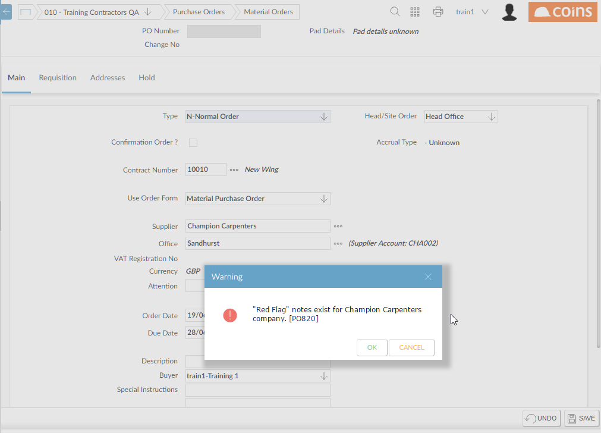

Warnings and Errors in Order Entry
You can configure to issue a warning or error message when raising an order, if Notes or Red Flag Notes exist against a or subcontractor. In order entry, when you enter the or subcontractor, will issue a warning/error message, as appropriate.

Configuration
You can set up different responses (whether
issues a warning or an error) for notes and red flag notes, and for purchase orders and subcontract orders.